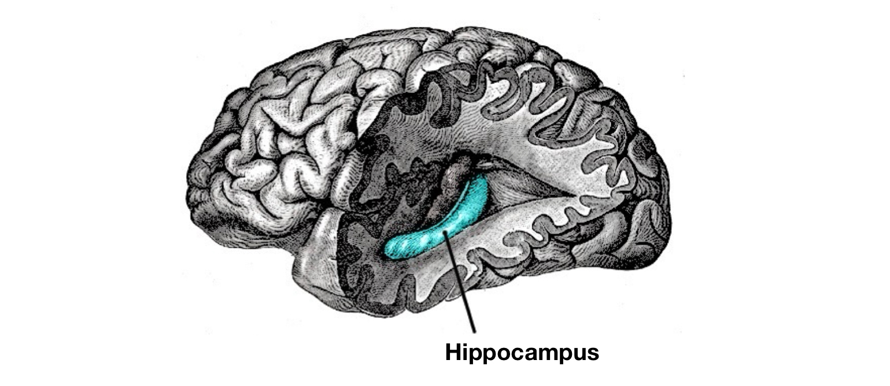
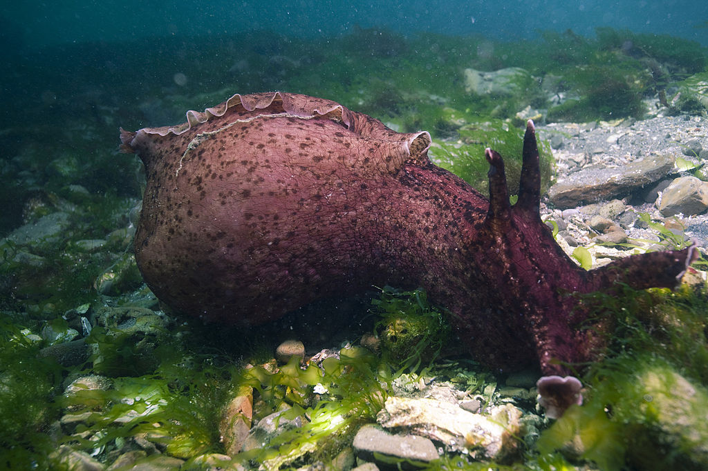
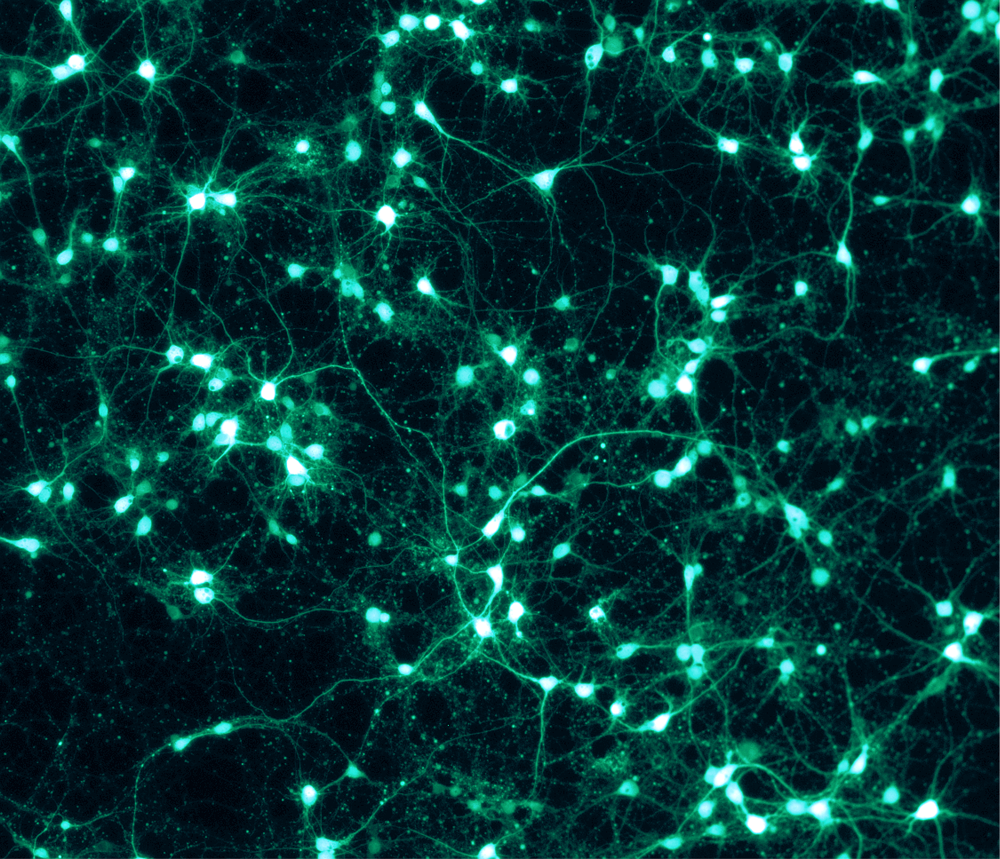

Researching the nervous system gives us insight into what makes us, us. Memory comes first on the list of things that define our personality and reality. Most of your opinions, feelings, and choices are based on memory, whether we realize it or not. You decide to eat chocolate every time because you remember that it tasted heavenly before. You become a little bit happier when you hear that one song because it played at a time when you were full of joy.
Types of Memories
Firstly, scientists divide memories into two: explicit and implicit. Explicit memories include events or factual information. For example, knowing that Earth revolves around the Sun or remembering the time you went to a wedding are both examples of explicit memory.
Implicit memory includes skills, conditioning, habits, or priming. A good example of this is classical conditioning—aka Pavlovian conditioning. In classical conditioning, an unconditioned stimulus is linked with a conditioned stimulus to create a specific response. One of the most well-known and the original example of this type of conditioning is done with a dog. Firstly, a bell (neutral stimulus) is rung to the dog, which receives no response. Showing food (unconditioned stimulus) however, creates salivation (unconditioned response). Then, the food and the bell are shown together, the food is usually given after the bell rings to create a link between them. When this is done repeatedly, the dog starts to show the same response to the bell as it does to the food—in this case, salivation. What happens is that the bell, initially neutral, is turned into a conditioned stimulus giving a conditioned response. This illustrates a type of memory because the dog learns that the outcome of the bell is supposed to be receiving food, and responds accordingly. The dog isn't necessarily aware of this, it is not a “fact” that is to be remembered, which is what makes it different from explicit memories.
Another Type of Classification
Memories can also be classified in terms of short-term and long-term. Short-term memories usually last seconds or minutes. Remembering the name of the person you just met or recalling a six-digit number someone just told you are examples of this. Long-term memory can last hours, years, or even a lifetime. Any childhood memory or anything you remember from your science classes is a form of long-term memory. The conversion of short-term memories into long-term ones is called consolidation.
The most well-known evidence of this short-term/long-term split in the brain comes from a patient named Henry Molaison (a.k.a. patient H.M.). In the 1950s, H.M.'s hippocampus was removed from both sides of his brain to treat his epileptic seizures. Although the seizures improved, he woke up unable to form new memories. However, he could remember everything from before the surgery without any issues.
H.M. became one of the most famous case studies in neuroscience because of how clearly his case showed that memory formation happens in a specific part of the brain, rather than being spread all over. Long-term memories, however, are stored elsewhere. Interestingly, H.M. was still able to form new skills, but he had no recollection that he had learned them. This shows that the formation of explicit memories is controlled by the hippocampus, which supports the distinction between implicit and explicit memory types.

Inside the Cells
This was the first step towards understanding the mechanism of memory formation in the brain. Since then, scientists have uncovered some of the cellular-level processes behind it. One important breakthrough came from research on California sea hares (Aplysia californica). These little gooey slime balls are perfect for neuron research because they have relatively few neurons compared to humans, and their cells are bigger. This makes it possible to pick out individual neurons and investigate what’s going on inside them.
The first thing to know is that neurons release neurotransmitters to signal to nearby neurons. The more neurotransmitters a neuron releases, the stronger the signal. When there’s a signal, a typical neuron releases these molecules. Signals can be triggered by chemicals, mechanical stimulation, or other inputs—either from outside or inside the neuron. In Aplysia, this signal is serotonin, which you may have heard of before.
During short-term memory formation, serotonin molecules bind to receptors on the neuron's surface. This triggers other mechanisms inside the neuron—like second messengers (e.g., cAMP, DAG)—and results in more neurotransmitters being released. More neurotransmitters mean a stronger signal. After a short while, though, the cell resets and returns to its “factory settings.”
Human brain experiments confirm that this mechanism works similarly in us. In short-term memory formation, there are little to no changes in the structure. What does change is the strength of the signal.

Long-term Memory Formation
Long-term memory formation, on the other hand, involves more extensive changes. Gene expression is affected, and neurons physically change. One of these changes is branching. This is part of what’s called neuroplasticity—a term you might’ve heard before.
Neurons have branches (called dendrites) that they use to connect to other neurons. These branches can grow or multiply. During long-term memory formation, scientists have observed an increase in the number and length of these branches. That’s why people who speak multiple languages often have greater cortical thickness. More information can physically change the structure of your brain.
Another process involved in forming long-term memories is called Long-Term Potentiation (LTP). This happens by strengthening synaptic connections over time. It works either by increasing the number of receptors that signal the neuron to give a response, or by increasing how many neurotransmitters are released. This is pretty similar to short-term memory formation, but the key differences are the brain region where it occurs and how long the effect lasts.
To Sum Up
There are different types of memory, and they’re formed through different processes in the brain. Every memory you have is the result of millions of neurons forming unique structures. It’s kind of like how computers work with just ones and zeros—it’s wild to imagine how something so simple can create something so complex, like a video.
In the same way, it’s insane to think that these tiny brain cells define who you are and everything you know. But it’s true. The more we learn about the brain, the more incomprehensible it becomes—which is exactly what makes neuroscience so thrilling.
